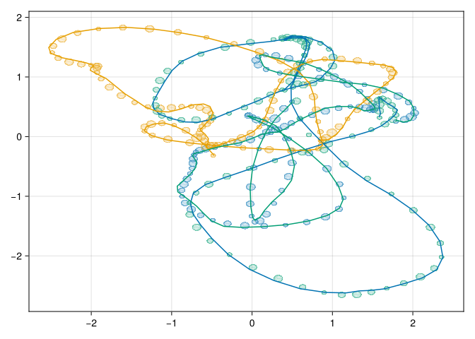

using DataFrames, PythonCall, CSV, Dates, DataFramesMeta, RecursiveArrayTools, StatsBase, CairoMakie, Distributions, SpecialFunctions, PDMats, LinearAlgebra, SizeCheck, KernelFunctions, AbstractGPs, LogExpFunctions, RandomCairoMakie.enable_only_mime!("png")I recently came across a dataset of container ship movement between Tallinn and Helsinki on Kaggle. In this notebook, we’ll try to classify whether a given ship’s trajectory seems similar to those of the container ships, or whether we’re looking at something else (perhaps a pirate).
I’ll start by loading the ship tracking data, taking zscores of the latitude and longitude, and normalizing timing information for each trajectory. We can identify rows belonging to the same ship’s trajectory by the ship’s International Maritime Organization code (IMO) and its actual arrival time (ATA). For simplicity, we’ll just consider 2k samples of trajectories leaving Helsinki for the time being.
function load_ship_data()
kagglehub = pyimport("kagglehub")
ships_path = pyconvert(String, kagglehub.dataset_download("bobaaayoung/container-ship-data-collection"))
raw_df = dropmissing(
CSV.read(joinpath(ships_path, "tracking_db.csv"), DataFrame,
dateformat="mm/dd/yyyy HH:MM",
types=Dict(:updated => DateTime, :ata => DateTime), silencewarnings=true))
df = @chain raw_df begin
@subset(:long .> 24)
@subset(:arrPort .== "FIHEL")
@select(:updated, :ata, :long, :lat, :imo)
@transform(:t = Minute.(:ata .- :updated), :long = zscore(:long), :lat = zscore(:lat))
@groupby :imo :ata
@transform(:nt = (:t .- minimum(:t)) ./ (maximum(:t) - minimum(:t)))
@subset((:nt .> 0) .& (:nt .< 1))
end
df, groupby(df, [:imo, :ata])
endload_ship_data (generic function with 1 method)df, groups = load_ship_data()(94944×7 DataFrame Row │ updated ata long lat imo ⋯ │ DateTime DateTime Float64 Float64 Int64 ⋯ ───────┼──────────────────────────────────────────────────────────────────────── 1 │ 2018-05-04T19:26:00 2018-04-05T21:26:00 -0.545055 -1.52547 936472 ⋯ 2 │ 2018-05-04T19:29:00 2018-04-05T21:24:00 -0.615397 -1.47017 936472 3 │ 2018-05-04T19:33:00 2018-04-05T21:28:00 -0.806885 -1.34498 936472 4 │ 2018-05-04T19:36:00 2018-04-05T21:26:00 -0.918912 -1.28835 936472 5 │ 2018-05-04T19:37:00 2018-04-05T21:31:00 -0.974925 -1.25871 936472 ⋯ 6 │ 2018-05-04T19:39:00 2018-04-05T21:30:00 -1.09086 -1.20032 936472 7 │ 2018-05-04T19:39:00 2018-04-05T21:26:00 -1.10128 -1.19501 936472 8 │ 2018-05-04T19:41:00 2018-04-05T21:26:00 -1.22112 -1.13661 936472 ⋮ │ ⋮ ⋮ ⋮ ⋮ ⋮ ⋱ 94938 │ 2019-12-03T20:06:00 2019-03-12T20:35:00 1.06891 1.07842 936472 ⋯ 94939 │ 2019-12-03T20:07:00 2019-03-12T20:29:00 1.03374 1.1054 936472 94940 │ 2019-12-03T20:12:00 2019-03-12T20:28:00 1.05458 1.24564 936472 94941 │ 2019-12-03T20:14:00 2019-03-12T20:26:00 1.09106 1.29386 936472 94942 │ 2019-12-03T20:16:00 2019-03-12T20:26:00 1.14447 1.33854 936472 ⋯ 94943 │ 2019-12-03T20:19:00 2019-03-12T20:24:00 1.1627 1.3965 936472 94944 │ 2019-12-03T20:23:00 2019-03-12T20:22:00 1.15358 1.48011 936472 3 columns and 94929 rows omitted, GroupedDataFrame with 18432 groups based on keys: imo, ata First Group (14 rows): imo = 9364722, ata = 2018-04-05T21:26:00 Row │ updated ata long lat imo ⋯ │ DateTime DateTime Float64 Float64 Int64 ⋯ ─────┼────────────────────────────────────────────────────────────────────────── 1 │ 2018-05-04T19:26:00 2018-04-05T21:26:00 -0.545055 -1.52547 9364722 ⋯ 2 │ 2018-05-04T19:36:00 2018-04-05T21:26:00 -0.918912 -1.28835 9364722 3 │ 2018-05-04T19:39:00 2018-04-05T21:26:00 -1.10128 -1.19501 9364722 4 │ 2018-05-04T19:41:00 2018-04-05T21:26:00 -1.22112 -1.13661 9364722 ⋮ │ ⋮ ⋮ ⋮ ⋮ ⋮ ⋱ 11 │ 2018-05-04T20:40:00 2018-04-05T21:26:00 0.945162 0.413511 9364722 ⋯ 12 │ 2018-05-04T20:47:00 2018-04-05T21:26:00 0.955583 0.609489 9364722 13 │ 2018-05-04T20:49:00 2018-04-05T21:26:00 0.984241 0.669211 9364722 14 │ 2018-05-04T20:55:00 2018-04-05T21:26:00 1.10539 0.856341 9364722 2 columns and 6 rows omitted ⋮ Last Group (1 row): imo = 9364722, ata = 2019-03-12T20:22:00 Row │ updated ata long lat imo t ⋯ │ DateTime DateTime Float64 Float64 Int64 Mi ⋯ ─────┼────────────────────────────────────────────────────────────────────────── 1 │ 2019-12-03T20:23:00 2019-03-12T20:22:00 1.15358 1.48011 9364722 -3 ⋯ 2 columns omitted)
Below, I’ve plotted the trajectories with color marking the passage of time.
scatter(df[!, :long], df[!, :lat], color=df[!, :nt], markersize=2, alpha=0.4)
The Model
It seems like there’s more than one standard way of moving between these ports. I make out three different routes; trajectories seem to be scattered around a central curve for each route.
We can model this behavior with a mixture of Gaussian processes. For each of the three different routes above (\(i=1,2,3\)), we’ll assume a function \(f_i\) mapping time to lattitude and longitude values was sampled from a Gaussian Process prior. Container ships will trajectories will always be close to one of these routes- we just don’t know which one. We’ll also assume that other (non-container) ships follow trajectories sampled independently from the same Gaussian Process prior. To tell if a given trajectory seems to be that of a container ship, we just need to check whether it more closely resembles the posterior mixture of container routes or prior over all possible ship trajectories.
Specifically, let \(y\) refer to the observed trajectories and \(y'\) refer to the new trajectory we’re trying to classify. Say \(B=0\) if \(y'\) is a container ship and \(B=1\) otherwise. We want to learn the posterior odds that \(B=1\) given \(y\) and \(y'\), which is just \(\frac{P(y' | y, B=1)P(B=1)}{P(y' | y, B=O)P(B=O)}\). When \(B=1\), we can get the likelihood of \(y'\) by integrating over samples \(f\) from the posterior GP mixture \(\int P(y' | f)P(f | y) \, df\). When \(B=0\), we can get the likelihood by integrating over samples \(g\) from the prior GP: \(\int P(y' | g)P(g) \, dg\).
We don’t know a priori what fraction of the ships in the region are container ships, but to be conservative, we’ll give equal prior probabiliy to \(B=0\) and \(B=1\).
Modeling Sub-Trajectories
Ideally, we’d like to identify out-of-distribution ships without having to observe their full port-to-port trajectories. To do this, we can marginalize the likelihood of a trajectory snippet over possible offsets in time.
function marginal_logprob(dist, val, t, σ2)
starts = LinRange(0, 1 - t[end], 200)
logsumexp([logpdf(dist(s .+ t, σ2), val) for s in starts])
endmarginal_logprob (generic function with 1 method)function ok_prob(t, gp, y1p, y2p, y1, y2)
"""Find the posterior probability that a ship with longitude/latitude trajectory pairs (`y1`, `y2`) at times `t` is a container ship (with trajectories coming from posterior GPs `y1p` and `y2p`) rather than some other kind of ship (with trajectories coming from prior `gp`).
"""
logistic(marginal_logprob(y1p, y1, t) + marginal_logprob(y2p, y2, t) -
marginal_logprob(gp, y1, t) - marginal_logprob(gp, y2, t))
endok_prob (generic function with 1 method)Approximating Posterior GP Mixtures
We can’t compute the posterior of a mixture of Gaussian processes analytically. But we can approximate it with mean field variational inference.
Let \(z_i\) be a 1-hot vector giving the route chosen in trajetory \(i\). I assume \(z_i \sim \text{Categorical}(\pi)\), and \(\pi \sim \text{Dirichlet}(\alpha_0)\). The variational posterior for \(\pi\) will be Dirichlet with parameters \(\alpha\).
For the likelihood, I’ll introduce inducing inputs \(c\) and outputs \(u_k\) for each route and assume that \(u_k = f_k(c)\) and \(p(y_i | u_k, z_{ik}) = \mathcal{N}(K_{yu} K_{uu}^{-1}u, Q_{yy})\) where \(Q_{yy} = \text{diag}(K_{yy} - K_{yu}K_{uu}^{-1}K_{uy}) + \sigma^2I\) (the Fully Indepenent Training Conditional assumption). Let \(A = K_{yu}K_{uu}^{-1}\) and \(Q = \Lambda^{-1}\). We can pre-calculate the kernel matrices and store them in a separate KernelMats struct for each trajectory. If we were more concered with performance, we would avoid finding \(K_{uu}^{-1}\) explicitly, but this is good enough for a blog post.
σ = 0.030.03struct KernelMats
Λ::PDiagMat{Float64,Vector{Float64}}
A::Matrix{Float64}
end@sizecheck function kernel_mats(kern, x_N, c_U)
K_UU_inv = inv(PDMat(kern.(c_U', c_U)))
k = kern(1, 1) # Assuming stationarity
K_N = [kern.(c_U, reshape(x, (1, :))) for x in x_N]
c = KernelMats[
let
K_UT = K_N[n]
KernelMats(
inv(PDiagMat(k .- diag(K_UT' * (K_UU_inv * K_UT)) .+ σ^2)),
K_UT' * K_UU_inv)
end for n in 1:N
]
(K_UU_inv, c)
endkernel_mats (generic function with 1 method)The variational posterior for inducing points \(u_k\) will be normal with mean \(m_k\) and covariance matrix \(S_k\).
struct VComp
S_inv::PDMat{Float64,Matrix{Float64}}
m1::Vector{Float64}
m2::Vector{Float64}
endNow to figure out the variational updates. We’ll start by deriving the component update for \(q(z_i)\). From the mean field assumption, we know the ELBO is maximized when \(\log q(z_{ik}) = E_q \log p(y_i | u_k) + E_q \log p(z_{ik}) + \text{const}\). As the approximate posterior over \(\pi\) is Dirichlet, \(E_q \log p(z_{ik}) = E_q \pi_k = \psi(\alpha_k) - \psi(\sum_j \alpha_j)\). It remains to find
\(E_q \log p(y_i | u_k) =-\frac{1}{2} E_q (y-Au_k)\Lambda (y-Au_k) + \frac{1}{2} \log |\Lambda|\)
Expanding the quadratic term lets us compute the expectation:
\(-2 y^T\Lambda A m_k + y^T\Lambda y + \text{Tr}(E[u_ku_k^T])A^T \Lambda A\) \(= -2 y^T\Lambda A m_k + y^T\Lambda y + \text{Tr}(m_km_k^T + S_k)A^T \Lambda A\) \(= -2 y^T\Lambda A m_k + y^T\Lambda y + \text{Tr}(S_kA^T \Lambda A) + m_k^TA^T\Lambda A m_k\) \(= (y - Am_k)^T\Lambda (y - A m_k) + \text{Tr}(S_kA^T \Lambda A)\)
We can eliminate terms like \(\psi(\sum_j \alpha _j)\) and \(\log | \Lambda |\) which are the same for all components. The result is an expression for \(q(z_i = k)\), which I’ll write as \(r_{ik}\).
function responsibilities(y1, y2, c::Vector{KernelMats}, o, alpha)
"Calculate r_ik for seeing `(y1, y2)` for each component in `o`"
Vector{Float64}[
softmax(Float64[isnothing(og) ? -Inf64 : let
μ1 = cn.A * og.m1
μ2 = cn.A * og.m2
V = og.S_inv \ (cn.A' * cn.Λ * cn.A)
q = quad(cn.Λ, y1n - μ1) + quad(cn.Λ, y2n - μ2)
-0.5 * q - tr(V) + digamma(alpha_g)
end for (og, alpha_g) in zip(o, alpha)])
for (cn, y1n, y2n) in zip(c, y1, y2)]
endresponsibilities (generic function with 1 method)Next, let’s calculate the inducing point variational parameters. From the mean field assumption, the ELBO is maximized when
\(\log q(u_k) = \sum_i E_q 1_{z_i = k} \log p(y_i | u_k, z_i = k) + \log p(u_k) + \text{const}\) \(= \sum_i r_{ik} (\langle u_ku_k^T, A^T\Lambda A \rangle + \langle \Lambda A u_k, y_i \rangle) + \langle u_ku_k^T, K_{uu}^{-1} \rangle + \text{const}\)
By combining like terms, we can see that \(S_k^{-1} = K_{uu}^{-1} + \sum_i r_{ik} A^T \Lambda A\) and \(S_k^{-1}m_k = \sum_i r_{ik} A^T \Lambda y_i\).
function fit_gp(g, K_UU_inv::PDMat{Float64,Matrix{Float64}}, r, y1, y2, c)
if sum(rn -> rn[g], r) < 1e-8
return nothing
end
S_inv = K_UU_inv + PDMat(sum(rn[g] * Xt_A_X(cn.Λ, cn.A) for (rn, cn) in zip(r, c) if rn[g] > 0))
m1 = S_inv \ sum(rn[g] * cn.A' * (cn.Λ * yn) for (rn, cn, yn) in zip(r, c, y1))
m2 = S_inv \ sum(rn[g] * cn.A' * (cn.Λ * yn) for (rn, cn, yn) in zip(r, c, y2))
VComp(S_inv, m1, m2)
endfit_gp (generic function with 1 method)function fit_gps(K_UU_inv::PDMat{Float64,Matrix{Float64}}, r, y1, y2, c)::Vector{Union{Nothing,VComp}}
Union{VComp,Nothing}[fit_gp(g, K_UU_inv, r, y1, y2, c) for g in 1:length(r[1])]
endfit_gps (generic function with 1 method)Finally, we get to the mixture weight paramers. As before,
\(\log q(\pi) = \log p(\pi) + E \log p(z_i | \pi) + \text{const}\) \(= \langle \alpha_0 - 1, \pi \rangle + \sum_i \langle r_i, \pi \rangle\)
This gives \(\alpha = \alpha_0 + \sum_i r_i\).
Putting everything together gives the following variational inference algorithm.
This uses an auxiliary function to compute fixed points.
function fixedpoint(f, arg::T; iters=500) where {T}
for _ in 1:iters
result = f(arg)::T
max_diff = maximum(abs, result - arg)
if max_diff < 1e-5
return result
end
arg = result
end
println("DID NOT CONVERGE")
arg
endfixedpoint (generic function with 1 method)@sizecheck function fit_mixture(kern, alpha0, x_N, y1_N, y2_N, z_M, o; iters=50)
K_MM_inv, c = kernel_mats(kern, x_N, z_M)
alpha = fixedpoint(alpha0; iters) do alpha
r = responsibilities(y1_N, y2_N, c, o, alpha)
o = fit_gps(K_MM_inv, r, y1_N, y2_N, c)
alpha0 + sum(r)
end
alpha, c, o
endfit_mixture (generic function with 1 method)Example on Synthetic Data
kern = with_lengthscale(Matern52Kernel(), 0.1)Matern 5/2 Kernel (metric = Distances.Euclidean(0.0))
- Scale Transform (s = 10.0)T = 100100N = 100100π_prior = Dirichlet(5 * ones(3))Distributions.Dirichlet{Float64, Vector{Float64}, Float64}(alpha=[5.0, 5.0, 5.0])gp = GP(kern)GP{ZeroMean{Float64}, TransformedKernel{Matern52Kernel{Distances.Euclidean}, ScaleTransform{Float64}}}(ZeroMean{Float64}(), Matern 5/2 Kernel (metric = Distances.Euclidean(0.0))
- Scale Transform (s = 10.0))rng = Xoshiro(9)Xoshiro(0x31c0fdb77e6b079f, 0xf8bbbedb8c20d31c, 0x1c19355ea0d34d01, 0x402b368a357b9496, 0x69a0c2eabd4f1212)pi = rand(π_prior)3-element Vector{Float64}:
0.36892846174002913
0.38153355876999534
0.24953797948997547(true_f, y1_N, y2_N, x_N) = let
x_T = LinRange(0, 1, T)
true_f = [rand(rng, gp(x_T), 2) for _ in 1:3]
noise = [σ .* randn(T, 2) for _ in 1:N]
z = rand(rng, Distributions.Categorical(pi), N)
y_T2N = stack(true_f[z] .+ noise)
y1_N = eachcol(y_T2N[:, 1, :])
y2_N = eachcol(y_T2N[:, 2, :])
x_N = [x_T for _ in 1:N]
(true_f, y1_N, y2_N, x_N)
end([[0.39940744485764307 0.781570857858878; 0.512664898939086 0.9316931016687168; … ; 1.5971325077761558 0.384910967509904; 1.582860813305773 0.3279274081244852], [-0.472291406780798 -0.31707101959464334; -0.5771870148169773 -0.151971382440848; … ; 0.956562978197726 -0.04504026546424312; 0.8338497795432375 -0.07039399921429594], [1.7847815717824167 0.2774961462911457; 1.884786093600304 0.24311245888699062; … ; 0.4102229023901559 0.45159679562935084; 0.49950707039911835 0.5780682109962041]], SubArray{Float64, 1, Matrix{Float64}, Tuple{Base.Slice{Base.OneTo{Int64}}, Int64}, true}[[0.3700879617376666, 0.47788108272999624, 0.5525052930328936, 0.5676365000476474, 0.600580781383119, 0.656945621953472, 0.6775837278595784, 0.6881661800554684, 0.5653046086360503, 0.4880848580064354 … 1.7852554741039721, 1.7631940807466238, 1.7866280687546399, 1.6855743542791397, 1.633295886410844, 1.5593140529511285, 1.5809315473099828, 1.5850692917905742, 1.5749665860994762, 1.5334497225603498], [-0.4211210630553008, -0.6285051132552908, -0.6227617039329616, -0.8708783039278554, -0.9826350021129571, -1.1425221312002887, -1.2456052275455118, -1.339157460801622, -1.3290334978511795, -1.2908546745738376 … 1.7440585177057981, 1.642796584537638, 1.5471585069379599, 1.4042550243933754, 1.273922733201116, 1.2097211725456494, 1.1401774243829077, 1.0330166219774146, 0.9774660463719848, 0.8694560989261199], [-0.44252855724920725, -0.5767173309396507, -0.7518329940704416, -0.8264096060580315, -0.9813279633871161, -1.0735124841508843, -1.2444212804907984, -1.3061050624555488, -1.3969219450012467, -1.303032688942919 … 1.7683495188197973, 1.6419402128662237, 1.5761334309833228, 1.3606435788261928, 1.224679012415514, 1.1808031839489388, 1.1440982686727479, 1.038392382871553, 0.9647433487335163, 0.8530716930658208], [-0.47473269079831315, -0.5615750444633624, -0.7183606354693861, -0.8867156543723269, -0.9749576028015003, -1.1542788066262792, -1.189686860068581, -1.2503907540431287, -1.3637508843511998, -1.2417064682862893 … 1.7444528889141617, 1.6338139567309706, 1.5221667857459085, 1.3851123960074552, 1.2918327829204133, 1.1962757171128644, 1.1486952037078746, 1.034241253576947, 0.9431906285244502, 0.8771208457572213], [0.36494672244837023, 0.505601088156253, 0.5419318915414362, 0.6390307602149727, 0.6699930478719739, 0.6380325617871504, 0.7000116125595375, 0.619618434365539, 0.6466087167325566, 0.4645811083735421 … 1.7772023639080774, 1.7879075341332262, 1.8234619091398676, 1.624647272462175, 1.595123486550642, 1.5823015283466466, 1.6018578158912113, 1.5445446904908762, 1.5804156908057965, 1.5874978731660736], [-0.45829387216263934, -0.5845683157765975, -0.7693263706843804, -0.8577174415492629, -0.8834134626113572, -1.0496103351531525, -1.2095788920673365, -1.3298190726797585, -1.3324800229270173, -1.2100700907652808 … 1.8267688543625462, 1.6884903757111873, 1.4990146493192344, 1.3954822052838494, 1.2625187306115169, 1.2072624049503318, 1.1245814546757065, 1.0427897663355867, 0.9501295786797349, 0.8557545395659737], [0.3911978212505599, 0.47390431099975877, 0.5172472721731246, 0.6005713954613187, 0.6564877516019645, 0.7428362817154499, 0.6849315350068836, 0.6893463560608264, 0.6005205136139856, 0.516664551994273 … 1.742633293786382, 1.783338177103919, 1.7520259940736869, 1.6961588834929628, 1.6145302208050327, 1.5889162342065626, 1.5491919318064642, 1.6088224008108758, 1.6238059225322634, 1.6468580894377165], [-0.4991119968068169, -0.6049268868041415, -0.7045121931024152, -0.8772407092667843, -1.0096857469337286, -1.125173412712578, -1.2041341694080048, -1.3813047339822273, -1.3517693973120835, -1.2406432132068899 … 1.7890062258542998, 1.688037354400058, 1.55065835081178, 1.373678310091426, 1.2882506966993172, 1.1985096174552177, 1.170421838865118, 1.073173545610662, 0.9302561089260525, 0.8343017204831965], [1.7786400304805892, 1.932975938351668, 2.027516057090291, 2.0033981296517247, 2.0128784398831536, 1.9631861753128486, 1.88461564254782, 1.6353303715807372, 1.4095268547439055, 1.1729328342054135 … 0.07080188064212697, 0.012460862800967806, -0.003860472673403812, -0.027792527897081892, 0.041006054523241325, 0.07233487412832193, 0.13337486155989425, 0.2976129483379553, 0.38809138003591453, 0.4717183474687341], [-0.44791149133422614, -0.5810326796431938, -0.7487286401181614, -0.7742755300049207, -0.9809947843833565, -1.0816424737325367, -1.2030786640396176, -1.3559847041836666, -1.3741457632277978, -1.2648118142953142 … 1.7811394294186476, 1.631426421683647, 1.5579500986578252, 1.4672048846444257, 1.2712351531963988, 1.1810396356652466, 1.1468560415074445, 1.0999079643321066, 0.9236696931355612, 0.7942863307502518] … [-0.44594578234679483, -0.5964229389200998, -0.7157235648306179, -0.8420088977395895, -0.9939481689585593, -1.0712170449386966, -1.1831352801992991, -1.3793831458908126, -1.3668583344846437, -1.2624021712766755 … 1.7030451330999403, 1.6588017752536302, 1.512757674357593, 1.4013957525922651, 1.250702904939713, 1.2121393136416265, 1.0744324286427764, 1.0620879318473355, 0.9283018855601111, 0.8801629156596172], [-0.5047967910591429, -0.5466362008552932, -0.6642314745302432, -0.8665718388130023, -0.9770433234279923, -1.082748196037504, -1.2445321491565609, -1.3428682755147545, -1.37176085369222, -1.2222335484676774 … 1.7362298140257617, 1.6248308007159942, 1.5876133909496646, 1.3805173346437243, 1.2983694600460338, 1.1636778226273061, 1.1590428012588874, 1.0828843878659404, 0.9812034152139966, 0.8281145968431958], [0.3864372145405262, 0.47506544453546246, 0.5790311319771552, 0.605001195666856, 0.6642869684695955, 0.6572596859911383, 0.6458185110626002, 0.6932787719655424, 0.5834768194374723, 0.4210018183812101 … 1.825359709436106, 1.7637870052307099, 1.7882698835578315, 1.6336417412945545, 1.5968288216523252, 1.5397504369174955, 1.5972296799671601, 1.5732473167653882, 1.5750034773116124, 1.6086170561222364], [1.7652791784827582, 1.8992601889650986, 1.952025741075971, 1.975228312896439, 2.0285127685927513, 1.9170691010660572, 1.7523626215932344, 1.588547282576697, 1.4568152531165184, 1.11160332392917 … 0.05493937081390281, 0.049141727865529075, 0.00161747946027661, -0.04965613318054553, -0.03803713447194219, 0.10903602769992818, 0.1927704678808896, 0.2850016776623056, 0.4188130112268084, 0.4810023570547357], [0.4568436560110791, 0.48120454594583395, 0.571062776775225, 0.5952367679609637, 0.67959854911344, 0.6639152098144613, 0.6926944303221002, 0.6707664681350729, 0.624327313587915, 0.49367900246722796 … 1.7248769135622033, 1.7988909358878185, 1.7055663411581536, 1.7091054868956446, 1.5445615111365127, 1.6105424278886316, 1.6073818339426091, 1.558477019335945, 1.6083236847122333, 1.6061616139075827], [-0.4835813560919496, -0.5942356617704319, -0.6934005695853287, -0.8737173243718228, -0.9896088391321894, -1.1117975171234642, -1.1945413835901322, -1.319212417107135, -1.3414057714347458, -1.2392607356840089 … 1.7528161969646778, 1.6924694705607917, 1.5367129548531426, 1.3953555090582246, 1.2449245129761877, 1.2448055522759653, 1.1313157873096107, 1.0911204298246533, 0.9820455857015086, 0.8369014421300336], [-0.47315145964374994, -0.6072952347887302, -0.701880445688005, -0.8913588489475074, -0.9723306840541012, -1.1048488413578572, -1.2281168567356953, -1.3370998069464055, -1.345697912763073, -1.2529732938260187 … 1.8102388083417889, 1.6157632299169338, 1.5118503776166272, 1.4049830864638395, 1.2451653591009686, 1.2040886523321568, 1.1649931662817816, 1.1058982705777327, 0.9798737421629538, 0.8557887184426698], [1.7816870699107052, 1.8537112521580037, 1.976950190984634, 1.986261857263395, 2.021509615944646, 2.005696075937408, 1.8123978064589177, 1.6048856037735737, 1.41076537382959, 1.1644426850695577 … 0.057427651456858686, 0.028476859108208852, 0.0058752637035537035, -0.019816606578055063, -0.05569232459204474, 0.14836624405061954, 0.18946405785437778, 0.3061126113781384, 0.4227092896828641, 0.49661083058849514], [-0.5233359997666176, -0.5645079977227427, -0.6811099898375295, -0.8130532288194817, -0.9635666569689258, -1.1034908626409008, -1.2013648271891462, -1.3153184932607274, -1.3492353730582967, -1.325160707906475 … 1.7799405339485965, 1.6420547516008175, 1.5807903035712507, 1.4081405505375408, 1.2825112685705002, 1.244780947058204, 1.0927230918227466, 1.148161555289747, 0.9339069566655267, 0.8397286373318037], [-0.480714146455318, -0.5902724390160647, -0.6741421716500787, -0.8094161433217102, -0.9780975130073811, -1.0542478765511951, -1.213235664986352, -1.3681628231299032, -1.267384648323656, -1.2456436388976502 … 1.762646039608105, 1.6014173787887998, 1.563066220405517, 1.3719650753744121, 1.2539148216557845, 1.1904511189212659, 1.1052689281117576, 1.124542482409055, 0.9413495117813608, 0.8523346180358521]], SubArray{Float64, 1, Matrix{Float64}, Tuple{Base.Slice{Base.OneTo{Int64}}, Int64}, true}[[0.8026667343773839, 0.9272374973895329, 1.1127739414618427, 1.1850772393095752, 1.3755161827643632, 1.5145110873441292, 1.5451907301923051, 1.6238314911980516, 1.7107084933276706, 1.6891266615139446 … 0.37705151045419133, 0.3970301134461245, 0.5406376063300915, 0.571561218068671, 0.6800069366790182, 0.6246300248434518, 0.5549571657924839, 0.4845750398315211, 0.4444632386688463, 0.3065966944421674], [-0.3511202590582168, -0.1394202595527906, -0.01592128257509561, 0.11456141792709228, 0.20546059628586333, 0.22156494914935, 0.22615040939683548, 0.09025338096872909, 0.182187630160484, -0.005985131923862824 … 0.9453481027904888, 0.840024046255369, 0.7933974937600053, 0.6098280496150628, 0.45261882673612297, 0.28363201452859776, 0.1761962510005486, 0.044366780231433076, -0.042824779486057486, -0.07321518270210282], [-0.3316590172562221, -0.12882551009709525, 0.014541497404227253, 0.07032042159061222, 0.2176387514998076, 0.1811778304305366, 0.16815037466155341, 0.1407701910457701, 0.0996079066868828, -0.02930677781917293 … 0.9493178932539263, 0.8902953306505575, 0.7558815763551197, 0.6232956457134926, 0.4624333195116825, 0.27285330599692004, 0.13070915954548842, 0.06284622293823146, -0.044645324121477765, -0.08316048793996679], [-0.3061132070781288, -0.18746915091063898, -0.0037156318009084863, 0.11477712248293126, 0.14178840135194523, 0.19457909414717062, 0.1955899805257978, 0.11467999852483013, 0.11595901240894115, 0.022845111590977667 … 0.9469114758188042, 0.833763050840117, 0.7458581706309779, 0.5551756175360192, 0.4739637556591287, 0.29179344911648075, 0.16481176509486664, 0.06225125282634908, -0.04991623542449028, -0.05926327822357183], [0.7542643532313039, 0.9381647159092591, 1.0572712378171865, 1.230254771632905, 1.4011319305296153, 1.450573926965493, 1.52631013974342, 1.5834123511215288, 1.6286189371679543, 1.6881582903149 … 0.42886155919053387, 0.43128489920801094, 0.4842915816963676, 0.5582992436597269, 0.6702241932135719, 0.6383303005842197, 0.6041011943044065, 0.45254403753246025, 0.40008280432257515, 0.3345193631040302], [-0.33971839622565775, -0.18497161908851448, 0.012290318908119165, 0.03893645767118309, 0.1462335973747323, 0.2486427659633012, 0.18025218264555226, 0.15180563377655565, 0.129006648407872, 0.04482222095069195 … 0.9809957348161344, 0.8749881080800541, 0.746274443026718, 0.5541425643246481, 0.4625891124459483, 0.32162274339713603, 0.1872853342094712, 0.06036664390304627, -0.03680231544771183, -0.049510137247818095], [0.8070002191587647, 0.9442913066249085, 1.1302769386697824, 1.2081967521746397, 1.3356914974758014, 1.5223766554137672, 1.5909753470138102, 1.627331547618399, 1.6511501976480922, 1.6689231102993827 … 0.40538984256155297, 0.42861193633673994, 0.5015969281072589, 0.5311856631469392, 0.6674954615231076, 0.5965903598553703, 0.5566369513333743, 0.48324093467948537, 0.4311549502042953, 0.39076973414700705], [-0.28480705916843696, -0.10625315182533043, 0.024785261879050544, 0.07641654517612127, 0.1552347330393129, 0.21467197524252887, 0.214388936776746, 0.17167367047308044, 0.08858284863844713, -0.003576561190596985 … 1.0149570354303759, 0.9116976342059242, 0.8239318219863443, 0.6096597989327066, 0.48176526860875346, 0.32314738554439126, 0.16730003837914675, 0.08077671698648625, -0.07390351923490435, -0.05204669294629327], [0.28648197660419655, 0.20155607654827692, 0.26083569673153795, 0.36486042972579297, 0.47696577741860846, 0.5728627677913581, 0.7118394193366427, 0.8165500345643881, 0.8503989847697979, 0.8896777697420456 … -1.4056923559021057, -1.3446808615941683, -1.1687235246679424, -0.8896726010400444, -0.5328105301816746, -0.21166465673454016, 0.032554311108303965, 0.2512420002094242, 0.40613003452988733, 0.5554062118802982], [-0.31588359240943087, -0.17187403815816005, -0.02484289353469079, 0.08707994300917316, 0.18861032983524167, 0.23601727846431259, 0.1828979770636666, 0.1949405573686691, 0.0929478161486642, 0.020004547787449693 … 0.9620080749546955, 0.8869241610481053, 0.7259735088196013, 0.5693908342304073, 0.4573272244950232, 0.29148148550445485, 0.1222081972384219, 0.02596855804006122, -0.04126537469085773, -0.08653472746798775] … [-0.35705120321208633, -0.20901635372498298, 0.02321892186912369, 0.11576829504557906, 0.14650371450550775, 0.20303895815636624, 0.24571110676730512, 0.11440248690470649, 0.07691455144487752, -0.010704949465951612 … 1.0079343494149848, 0.8639592791616786, 0.6989091242862185, 0.5875322078162816, 0.4186520837850273, 0.2654176591290303, 0.1682257940773366, 0.06676302288135211, -0.044769623955030355, -0.0788874095146267], [-0.279904108877613, -0.12295700233805448, 0.0071024562964638795, 0.08351957396009985, 0.1917727970633079, 0.1922179072599698, 0.19007885524486368, 0.11830436120149257, 0.11410074376829943, 0.01998378576031322 … 0.9492839117247923, 0.8589391035144648, 0.7319842854719563, 0.6128710414693419, 0.4817199565533437, 0.3135326814014038, 0.16696709064644785, 0.09259594733545032, -0.059887950660281526, -0.06310514982217307], [0.7485885481532815, 0.9496278327723022, 1.1355736085922767, 1.1970508579770986, 1.3664900305228709, 1.4789190585922352, 1.5562589096163317, 1.6778939629468463, 1.6972443353143774, 1.6889220543113057 … 0.37479976199667936, 0.47511857681857794, 0.5105806160436273, 0.5383790314420341, 0.6217977166256058, 0.6870037921444523, 0.5882077526873921, 0.4640753689514396, 0.3691364274267584, 0.32346671203108546], [0.28218547921788467, 0.25852326560035777, 0.24804168349375058, 0.34035215679584213, 0.48332091491032664, 0.6810745307736549, 0.7397047752201192, 0.8227716054680719, 0.9051939537338954, 0.9101865057623911 … -1.412996682530946, -1.3325410232299726, -1.182947548555859, -0.8412079171641019, -0.5041422949557393, -0.16769397982582562, 0.10509389309414877, 0.33998724966109944, 0.5023973081720233, 0.5688581438571654], [0.7101443419242278, 0.92537579827458, 1.0610646275627824, 1.208902483146923, 1.4000777462059244, 1.4894610567046778, 1.5644128089198555, 1.621089004697623, 1.6888913837865571, 1.6464733511232061 … 0.3456885315155104, 0.4596129940542724, 0.491276304574797, 0.5198203237315869, 0.655724814227794, 0.693713107801062, 0.5775682053959397, 0.5010802378190798, 0.35285324550080654, 0.3119044310686243], [-0.36306238962978576, -0.12389784539665918, -0.03267561160049834, 0.07582850937766375, 0.19309351607550818, 0.22632673439955503, 0.22787902916734107, 0.18175550402040694, 0.06540796199682547, 0.04787935917086694 … 0.9164575597690792, 0.8931848866429338, 0.7148653413134657, 0.6040060300793832, 0.5191080406576657, 0.30390468880288385, 0.16387312554123587, 0.06095543112877319, -0.07994270150037766, -0.05720146267407376], [-0.32410490682718823, -0.1417689843419464, 0.04179619775600474, 0.16226839463733644, 0.21713888548744123, 0.2649215807550171, 0.20120446679707107, 0.17468738952420917, 0.10792588917593836, -0.01579405559071982 … 0.9321369006252102, 0.8769783256543988, 0.7465564760762197, 0.6192597526582085, 0.49699952114827506, 0.3324812875687691, 0.1674177074005299, 0.08781208984408945, -0.09395454139673826, -0.12054932874179738], [0.29020548407997343, 0.24367041136655856, 0.3140377175581981, 0.326030813256892, 0.4922290250390344, 0.69727486316066, 0.6715321969219319, 0.8220146448200999, 0.8571048995855263, 0.9569098957853442 … -1.4085410061936572, -1.3139630581712771, -1.144940546367433, -0.8649584777180653, -0.5340106625375828, -0.15799823192358955, 0.10376369727576212, 0.3235305289744173, 0.4729629138433807, 0.6080658146372319], [-0.31922898415091433, -0.1277049942711259, -0.03651236916001316, 0.13697856902367483, 0.17011585663299533, 0.21585601992290315, 0.23131615828652724, 0.18219613085112296, 0.06861156243141214, 0.03269045900839065 … 0.9650255147908333, 0.9013952849286737, 0.7903142815081935, 0.602727673045968, 0.4284457361412203, 0.2691222965999577, 0.17383127894830167, 0.02768397406416313, -0.0550293602895119, -0.06250077994127747], [-0.30763151538794775, -0.11112087217424535, -0.04011655123221196, 0.1299296495772406, 0.15642780439202808, 0.20332251240533103, 0.23625236030045538, 0.14377374782200086, 0.06136200192502247, 0.009558288951302969 … 0.9637535656666396, 0.895903950309292, 0.7115397197932328, 0.6059992603639028, 0.40487763604619487, 0.29276415532274447, 0.17868614362400462, 0.07885875761328787, -0.044904922656329685, -0.07785071961322676]], LinRange{Float64, Int64}[LinRange{Float64}(0.0, 1.0, 100), LinRange{Float64}(0.0, 1.0, 100), LinRange{Float64}(0.0, 1.0, 100), LinRange{Float64}(0.0, 1.0, 100), LinRange{Float64}(0.0, 1.0, 100), LinRange{Float64}(0.0, 1.0, 100), LinRange{Float64}(0.0, 1.0, 100), LinRange{Float64}(0.0, 1.0, 100), LinRange{Float64}(0.0, 1.0, 100), LinRange{Float64}(0.0, 1.0, 100) … LinRange{Float64}(0.0, 1.0, 100), LinRange{Float64}(0.0, 1.0, 100), LinRange{Float64}(0.0, 1.0, 100), LinRange{Float64}(0.0, 1.0, 100), LinRange{Float64}(0.0, 1.0, 100), LinRange{Float64}(0.0, 1.0, 100), LinRange{Float64}(0.0, 1.0, 100), LinRange{Float64}(0.0, 1.0, 100), LinRange{Float64}(0.0, 1.0, 100), LinRange{Float64}(0.0, 1.0, 100)])c_U = LinRange(0, 1, 25)25-element LinRange{Float64, Int64}:
0.0, 0.0416667, 0.0833333, 0.125, …, 0.875, 0.916667, 0.958333, 1.0To kick off variational inference, we’ll need to guess starting parameters for \(S_k\) and \(m_k\).
o_guess = let
f = gp(c_U, σ^2)
K_UU_inv = inv(PDMat(kern.(c_U', c_U)))
Union{Nothing,VComp}[VComp(K_UU_inv, rand(rng, f), rand(rng, f)) for _ in 1:3]
end3-element Vector{Union{Nothing, VComp}}:
VComp([7.454870343138737 -12.085564351326695 … -4.395025867196253e-8 1.0695053577639308e-8; -12.085564351326695 27.047547206323763 … 1.8060921559003263e-7 -4.395025867240513e-8; … ; -4.395025867196253e-8 1.8060921559003263e-7 … 27.04754720632348 -12.085564351326603; 1.0695053577639308e-8 -4.395025867240513e-8 … -12.085564351326603 7.454870343138712], [-0.32979921047879956, -0.5897305605112932, 0.11447706895399364, 1.029017128451943, 1.0599601362252413, 0.5111666085710849, 0.07907917386581927, 0.2877821470816543, 0.6470354741278084, 1.4784262694762869 … -0.5740153604150344, -0.5371827926948518, -0.7993928322576462, -0.5568548810814099, -1.1369227588787811, -1.798383746675905, -1.2631768279691984, -0.7743985404177847, -0.5390795325431714, 0.46438075009635527], [0.43883495716887116, 0.9848746247385155, 0.9515814521504622, 0.7643492693358623, 0.5271321278211968, 0.4894869429738167, 0.8325602734008992, 1.3088984166300248, 1.8516330253814923, 1.8097893768525444 … -1.2254495200013993, -0.9601158375877539, -0.46840313165530256, -0.46897044443131936, -0.48417534075567253, -0.5578469644611623, -1.0491654256770087, -1.4257330683614824, -0.8617948360702556, 0.017421172919114353])
VComp([7.454870343138737 -12.085564351326695 … -4.395025867196253e-8 1.0695053577639308e-8; -12.085564351326695 27.047547206323763 … 1.8060921559003263e-7 -4.395025867240513e-8; … ; -4.395025867196253e-8 1.8060921559003263e-7 … 27.04754720632348 -12.085564351326603; 1.0695053577639308e-8 -4.395025867240513e-8 … -12.085564351326603 7.454870343138712], [-0.7744159166454945, -1.2601807812167034, -0.9958548872815728, -0.17653467402440767, 0.9430594849897121, 2.0105500724949295, 2.033124578960417, 1.8565564339339036, 1.8221137639819547, 1.1363083966179663 … 0.15448540477257527, 0.41259110078244066, -0.0027348811068554422, 0.19620549642147278, 0.8763233073663659, 1.3773182347415502, 1.2869812975779953, 0.7746707958819704, -0.022812002763165848, -0.5813990084339119], [0.7846997214502921, 0.9282255890427066, 0.9645535603585261, 0.6532360444039843, 0.3532747775171625, -0.06511150394942444, 0.38443523877237284, 0.9039526689577165, 0.8965788941631468, 0.3359702471738463 … -0.34629481463918804, -0.8349062772444377, -0.5182156620975424, -0.044966742684170016, 0.5312907147853932, 0.5535393563291215, 0.9294317565413944, 1.479226205158952, 1.5475181642383982, 0.8477215849890636])
VComp([7.454870343138737 -12.085564351326695 … -4.395025867196253e-8 1.0695053577639308e-8; -12.085564351326695 27.047547206323763 … 1.8060921559003263e-7 -4.395025867240513e-8; … ; -4.395025867196253e-8 1.8060921559003263e-7 … 27.04754720632348 -12.085564351326603; 1.0695053577639308e-8 -4.395025867240513e-8 … -12.085564351326603 7.454870343138712], [1.7486689273216505, 2.4259674782795706, 2.23590574897882, 1.3197002380068752, 0.15255298167106107, -0.13640229167983647, -0.2978069479132432, -0.2357749372929084, -0.480667401701669, -0.3200016176917847 … 0.30610173054220047, 0.7773459629412118, 0.6983570030055796, 0.3619794114301518, 0.23999594112184505, -0.1174427074074989, -0.750398403767938, -1.5117006503169192, -1.4472670583060792, -1.0947027562950333], [0.6884887829721742, 1.0012706667133673, 1.4795170415409875, 1.1715523761660434, 1.059851802972681, 0.47428421889003575, 0.5799475934607595, 1.2958003220887966, 1.4223610253305643, 1.4728308154550735 … -0.37139044454526404, 0.48014979684391895, 0.39591942033965993, -0.49328143269907426, -0.18136582469922452, 0.2431903591430569, 0.4586852603345645, -0.24386642954148235, -0.6263680839326332, -0.6205153515060421])_, c, o = fit_mixture(kern, π_prior.alpha, x_N, y1_N, y2_N, c_U, o_guess; iters=50)([33.0, 42.0, 40.0], KernelMats[KernelMats([1111.111111111111 0.0 … 0.0 0.0; 0.0 338.3030875290355 … 0.0 0.0; … ; 0.0 0.0 … 338.30308752883224 0.0; 0.0 0.0 … 0.0 1111.1111111071364], [0.9999999999999987 -5.1769817281390405e-15 … -2.0285485224130183e-19 5.1985138724645184e-20; 0.7242230000833083 0.38463921309029714 … 5.850640797546697e-10 -1.4237212403844214e-10; … ; -1.423721240887343e-10 5.850640799372934e-10 … 0.38463921309030774 0.7242230000833062; 6.253485430900889e-22 -1.036291871406433e-20 … 3.552713678800501e-15 0.9999999999999964]), KernelMats([1111.111111111111 0.0 … 0.0 0.0; 0.0 338.3030875290355 … 0.0 0.0; … ; 0.0 0.0 … 338.30308752883224 0.0; 0.0 0.0 … 0.0 1111.1111111071364], [0.9999999999999987 -5.1769817281390405e-15 … -2.0285485224130183e-19 5.1985138724645184e-20; 0.7242230000833083 0.38463921309029714 … 5.850640797546697e-10 -1.4237212403844214e-10; … ; -1.423721240887343e-10 5.850640799372934e-10 … 0.38463921309030774 0.7242230000833062; 6.253485430900889e-22 -1.036291871406433e-20 … 3.552713678800501e-15 0.9999999999999964]), KernelMats([1111.111111111111 0.0 … 0.0 0.0; 0.0 338.3030875290355 … 0.0 0.0; … ; 0.0 0.0 … 338.30308752883224 0.0; 0.0 0.0 … 0.0 1111.1111111071364], [0.9999999999999987 -5.1769817281390405e-15 … -2.0285485224130183e-19 5.1985138724645184e-20; 0.7242230000833083 0.38463921309029714 … 5.850640797546697e-10 -1.4237212403844214e-10; … ; -1.423721240887343e-10 5.850640799372934e-10 … 0.38463921309030774 0.7242230000833062; 6.253485430900889e-22 -1.036291871406433e-20 … 3.552713678800501e-15 0.9999999999999964]), KernelMats([1111.111111111111 0.0 … 0.0 0.0; 0.0 338.3030875290355 … 0.0 0.0; … ; 0.0 0.0 … 338.30308752883224 0.0; 0.0 0.0 … 0.0 1111.1111111071364], [0.9999999999999987 -5.1769817281390405e-15 … -2.0285485224130183e-19 5.1985138724645184e-20; 0.7242230000833083 0.38463921309029714 … 5.850640797546697e-10 -1.4237212403844214e-10; … ; -1.423721240887343e-10 5.850640799372934e-10 … 0.38463921309030774 0.7242230000833062; 6.253485430900889e-22 -1.036291871406433e-20 … 3.552713678800501e-15 0.9999999999999964]), KernelMats([1111.111111111111 0.0 … 0.0 0.0; 0.0 338.3030875290355 … 0.0 0.0; … ; 0.0 0.0 … 338.30308752883224 0.0; 0.0 0.0 … 0.0 1111.1111111071364], [0.9999999999999987 -5.1769817281390405e-15 … -2.0285485224130183e-19 5.1985138724645184e-20; 0.7242230000833083 0.38463921309029714 … 5.850640797546697e-10 -1.4237212403844214e-10; … ; -1.423721240887343e-10 5.850640799372934e-10 … 0.38463921309030774 0.7242230000833062; 6.253485430900889e-22 -1.036291871406433e-20 … 3.552713678800501e-15 0.9999999999999964]), KernelMats([1111.111111111111 0.0 … 0.0 0.0; 0.0 338.3030875290355 … 0.0 0.0; … ; 0.0 0.0 … 338.30308752883224 0.0; 0.0 0.0 … 0.0 1111.1111111071364], [0.9999999999999987 -5.1769817281390405e-15 … -2.0285485224130183e-19 5.1985138724645184e-20; 0.7242230000833083 0.38463921309029714 … 5.850640797546697e-10 -1.4237212403844214e-10; … ; -1.423721240887343e-10 5.850640799372934e-10 … 0.38463921309030774 0.7242230000833062; 6.253485430900889e-22 -1.036291871406433e-20 … 3.552713678800501e-15 0.9999999999999964]), KernelMats([1111.111111111111 0.0 … 0.0 0.0; 0.0 338.3030875290355 … 0.0 0.0; … ; 0.0 0.0 … 338.30308752883224 0.0; 0.0 0.0 … 0.0 1111.1111111071364], [0.9999999999999987 -5.1769817281390405e-15 … -2.0285485224130183e-19 5.1985138724645184e-20; 0.7242230000833083 0.38463921309029714 … 5.850640797546697e-10 -1.4237212403844214e-10; … ; -1.423721240887343e-10 5.850640799372934e-10 … 0.38463921309030774 0.7242230000833062; 6.253485430900889e-22 -1.036291871406433e-20 … 3.552713678800501e-15 0.9999999999999964]), KernelMats([1111.111111111111 0.0 … 0.0 0.0; 0.0 338.3030875290355 … 0.0 0.0; … ; 0.0 0.0 … 338.30308752883224 0.0; 0.0 0.0 … 0.0 1111.1111111071364], [0.9999999999999987 -5.1769817281390405e-15 … -2.0285485224130183e-19 5.1985138724645184e-20; 0.7242230000833083 0.38463921309029714 … 5.850640797546697e-10 -1.4237212403844214e-10; … ; -1.423721240887343e-10 5.850640799372934e-10 … 0.38463921309030774 0.7242230000833062; 6.253485430900889e-22 -1.036291871406433e-20 … 3.552713678800501e-15 0.9999999999999964]), KernelMats([1111.111111111111 0.0 … 0.0 0.0; 0.0 338.3030875290355 … 0.0 0.0; … ; 0.0 0.0 … 338.30308752883224 0.0; 0.0 0.0 … 0.0 1111.1111111071364], [0.9999999999999987 -5.1769817281390405e-15 … -2.0285485224130183e-19 5.1985138724645184e-20; 0.7242230000833083 0.38463921309029714 … 5.850640797546697e-10 -1.4237212403844214e-10; … ; -1.423721240887343e-10 5.850640799372934e-10 … 0.38463921309030774 0.7242230000833062; 6.253485430900889e-22 -1.036291871406433e-20 … 3.552713678800501e-15 0.9999999999999964]), KernelMats([1111.111111111111 0.0 … 0.0 0.0; 0.0 338.3030875290355 … 0.0 0.0; … ; 0.0 0.0 … 338.30308752883224 0.0; 0.0 0.0 … 0.0 1111.1111111071364], [0.9999999999999987 -5.1769817281390405e-15 … -2.0285485224130183e-19 5.1985138724645184e-20; 0.7242230000833083 0.38463921309029714 … 5.850640797546697e-10 -1.4237212403844214e-10; … ; -1.423721240887343e-10 5.850640799372934e-10 … 0.38463921309030774 0.7242230000833062; 6.253485430900889e-22 -1.036291871406433e-20 … 3.552713678800501e-15 0.9999999999999964]) … KernelMats([1111.111111111111 0.0 … 0.0 0.0; 0.0 338.3030875290355 … 0.0 0.0; … ; 0.0 0.0 … 338.30308752883224 0.0; 0.0 0.0 … 0.0 1111.1111111071364], [0.9999999999999987 -5.1769817281390405e-15 … -2.0285485224130183e-19 5.1985138724645184e-20; 0.7242230000833083 0.38463921309029714 … 5.850640797546697e-10 -1.4237212403844214e-10; … ; -1.423721240887343e-10 5.850640799372934e-10 … 0.38463921309030774 0.7242230000833062; 6.253485430900889e-22 -1.036291871406433e-20 … 3.552713678800501e-15 0.9999999999999964]), KernelMats([1111.111111111111 0.0 … 0.0 0.0; 0.0 338.3030875290355 … 0.0 0.0; … ; 0.0 0.0 … 338.30308752883224 0.0; 0.0 0.0 … 0.0 1111.1111111071364], [0.9999999999999987 -5.1769817281390405e-15 … -2.0285485224130183e-19 5.1985138724645184e-20; 0.7242230000833083 0.38463921309029714 … 5.850640797546697e-10 -1.4237212403844214e-10; … ; -1.423721240887343e-10 5.850640799372934e-10 … 0.38463921309030774 0.7242230000833062; 6.253485430900889e-22 -1.036291871406433e-20 … 3.552713678800501e-15 0.9999999999999964]), KernelMats([1111.111111111111 0.0 … 0.0 0.0; 0.0 338.3030875290355 … 0.0 0.0; … ; 0.0 0.0 … 338.30308752883224 0.0; 0.0 0.0 … 0.0 1111.1111111071364], [0.9999999999999987 -5.1769817281390405e-15 … -2.0285485224130183e-19 5.1985138724645184e-20; 0.7242230000833083 0.38463921309029714 … 5.850640797546697e-10 -1.4237212403844214e-10; … ; -1.423721240887343e-10 5.850640799372934e-10 … 0.38463921309030774 0.7242230000833062; 6.253485430900889e-22 -1.036291871406433e-20 … 3.552713678800501e-15 0.9999999999999964]), KernelMats([1111.111111111111 0.0 … 0.0 0.0; 0.0 338.3030875290355 … 0.0 0.0; … ; 0.0 0.0 … 338.30308752883224 0.0; 0.0 0.0 … 0.0 1111.1111111071364], [0.9999999999999987 -5.1769817281390405e-15 … -2.0285485224130183e-19 5.1985138724645184e-20; 0.7242230000833083 0.38463921309029714 … 5.850640797546697e-10 -1.4237212403844214e-10; … ; -1.423721240887343e-10 5.850640799372934e-10 … 0.38463921309030774 0.7242230000833062; 6.253485430900889e-22 -1.036291871406433e-20 … 3.552713678800501e-15 0.9999999999999964]), KernelMats([1111.111111111111 0.0 … 0.0 0.0; 0.0 338.3030875290355 … 0.0 0.0; … ; 0.0 0.0 … 338.30308752883224 0.0; 0.0 0.0 … 0.0 1111.1111111071364], [0.9999999999999987 -5.1769817281390405e-15 … -2.0285485224130183e-19 5.1985138724645184e-20; 0.7242230000833083 0.38463921309029714 … 5.850640797546697e-10 -1.4237212403844214e-10; … ; -1.423721240887343e-10 5.850640799372934e-10 … 0.38463921309030774 0.7242230000833062; 6.253485430900889e-22 -1.036291871406433e-20 … 3.552713678800501e-15 0.9999999999999964]), KernelMats([1111.111111111111 0.0 … 0.0 0.0; 0.0 338.3030875290355 … 0.0 0.0; … ; 0.0 0.0 … 338.30308752883224 0.0; 0.0 0.0 … 0.0 1111.1111111071364], [0.9999999999999987 -5.1769817281390405e-15 … -2.0285485224130183e-19 5.1985138724645184e-20; 0.7242230000833083 0.38463921309029714 … 5.850640797546697e-10 -1.4237212403844214e-10; … ; -1.423721240887343e-10 5.850640799372934e-10 … 0.38463921309030774 0.7242230000833062; 6.253485430900889e-22 -1.036291871406433e-20 … 3.552713678800501e-15 0.9999999999999964]), KernelMats([1111.111111111111 0.0 … 0.0 0.0; 0.0 338.3030875290355 … 0.0 0.0; … ; 0.0 0.0 … 338.30308752883224 0.0; 0.0 0.0 … 0.0 1111.1111111071364], [0.9999999999999987 -5.1769817281390405e-15 … -2.0285485224130183e-19 5.1985138724645184e-20; 0.7242230000833083 0.38463921309029714 … 5.850640797546697e-10 -1.4237212403844214e-10; … ; -1.423721240887343e-10 5.850640799372934e-10 … 0.38463921309030774 0.7242230000833062; 6.253485430900889e-22 -1.036291871406433e-20 … 3.552713678800501e-15 0.9999999999999964]), KernelMats([1111.111111111111 0.0 … 0.0 0.0; 0.0 338.3030875290355 … 0.0 0.0; … ; 0.0 0.0 … 338.30308752883224 0.0; 0.0 0.0 … 0.0 1111.1111111071364], [0.9999999999999987 -5.1769817281390405e-15 … -2.0285485224130183e-19 5.1985138724645184e-20; 0.7242230000833083 0.38463921309029714 … 5.850640797546697e-10 -1.4237212403844214e-10; … ; -1.423721240887343e-10 5.850640799372934e-10 … 0.38463921309030774 0.7242230000833062; 6.253485430900889e-22 -1.036291871406433e-20 … 3.552713678800501e-15 0.9999999999999964]), KernelMats([1111.111111111111 0.0 … 0.0 0.0; 0.0 338.3030875290355 … 0.0 0.0; … ; 0.0 0.0 … 338.30308752883224 0.0; 0.0 0.0 … 0.0 1111.1111111071364], [0.9999999999999987 -5.1769817281390405e-15 … -2.0285485224130183e-19 5.1985138724645184e-20; 0.7242230000833083 0.38463921309029714 … 5.850640797546697e-10 -1.4237212403844214e-10; … ; -1.423721240887343e-10 5.850640799372934e-10 … 0.38463921309030774 0.7242230000833062; 6.253485430900889e-22 -1.036291871406433e-20 … 3.552713678800501e-15 0.9999999999999964]), KernelMats([1111.111111111111 0.0 … 0.0 0.0; 0.0 338.3030875290355 … 0.0 0.0; … ; 0.0 0.0 … 338.30308752883224 0.0; 0.0 0.0 … 0.0 1111.1111111071364], [0.9999999999999987 -5.1769817281390405e-15 … -2.0285485224130183e-19 5.1985138724645184e-20; 0.7242230000833083 0.38463921309029714 … 5.850640797546697e-10 -1.4237212403844214e-10; … ; -1.423721240887343e-10 5.850640799372934e-10 … 0.38463921309030774 0.7242230000833062; 6.253485430900889e-22 -1.036291871406433e-20 … 3.552713678800501e-15 0.9999999999999964])], Union{Nothing, VComp}[VComp([38046.26445509075 5325.464176322597 … 8.006537288460481e-5 -2.1740008405797687e-5; 5325.464176322597 62727.21482930112 … -0.00029091409508395566 8.006537289784688e-5; … ; 8.006537288460481e-5 -0.00029091409508395566 … 62727.214828988595 5325.464176318087; -2.1740008405797687e-5 8.006537289784688e-5 … 5325.464176318087 38046.264454973796], [1.7884384433739497, 2.0078691637258808, 1.3336730045136205, 0.27314880593905083, 0.11717217357332622, 0.7608730047237832, 1.418507139298858, 1.5047548465666285, 1.2232513340114586, 0.5870425288598827 … -0.5090363917647711, 0.4159266785825978, 1.142011701120123, 0.3991566630081422, -0.03828048002571067, 0.45909901400871095, 0.30936063082589194, 0.003078292861633498, 0.07752886898789478, 0.4972970076652429], [0.251311327227621, 0.4888737351135423, 0.8867746410121203, 1.086589015474623, 1.359889255567608, 1.1663408298950968, 0.6742235065052071, 0.43683503392133255, 0.50347745629217, 0.28420664577352606 … -1.3913449608047943, -1.4820787109705316, -1.0020681941677192, 0.015795349003787432, 0.354779181378556, -0.12879054552524927, -1.0416735978677272, -1.3667321599783797, -0.24280530297126435, 0.585944704826394]), VComp([50273.02467875962 7041.105164396358 … 0.00010581479818065806 -2.8731305946311186e-5; 7041.105164396358 82880.84002711735 … -0.0003844802500373811 0.0001058147981981566; … ; 0.00010581479818065806 -0.0003844802500373811 … 82880.84002670436 7041.105164390399; -2.8731305946311186e-5 0.0001058147981981566 … 7041.105164390399 50273.02467860508], [-0.4836135038178731, -0.988678978737391, -1.3229272605434894, -0.32482102645182676, 0.7706544694426579, 0.8325822141583343, 0.5987229795637262, -0.5241990119238615, -1.9107531261540993, -2.4820153872991875 … -0.6464292997148956, -0.5574036888828474, -0.3351650246270802, 0.1112275857600006, 0.32323019350882154, 0.8085350087723989, 1.5858869985684616, 1.6837522737163038, 1.20160003294185, 0.8592494110733625], [-0.31784821189198365, 0.1986421274795545, 0.07395072617986106, -0.16580134440202543, -0.22344252696654085, 0.1827130996591008, 1.0423472580033715, 1.6508726669189218, 1.8051465608388193, 1.3977140239824084 … 0.12167854454672755, -0.11185061677671573, -0.10965042590176122, 0.19013484987004253, 0.8374248207113852, 1.2895245916656173, 1.2016737602722332, 0.9172989551111528, 0.31352000354086257, -0.07552767910043261]), VComp([47555.96685127765 6659.851611491078 … 0.000100092703670424 -2.717768427064152e-5; 6659.851611491078 78402.25664982485 … -0.0003636877711588421 0.00010009270368697667; … ; 0.000100092703670424 -0.0003636877711588421 … 78402.25664943419 6659.851611485441; -2.717768427064152e-5 0.00010009270368697667 … 6659.851611485441 47555.96685113146], [0.4066548669398225, 0.6527573699038731, 0.5816931561575486, 0.39017907478916863, 0.9103386003926413, 0.8994363236523513, 0.40972139186328504, -0.26309126872025157, -1.0235610420699035, -1.2045025137506382 … 2.3605910456886523, 1.6760297054286803, 0.8655616471928317, -0.3470911540061117, -0.7543098221945449, 0.12175262357027786, 1.4032123448577127, 1.7844745477706296, 1.5926862118501055, 1.5854845568338483], [0.776847463305056, 1.38569216887199, 1.6662121732024364, 1.641756303077532, 1.5222001502924467, 0.9846669635716546, 0.8003230315970344, 0.39959120493513467, 0.302546033373993, 0.6610598848670328 … -1.9937429281585854, -2.5432907386447496, -2.606678025607028, -1.921237570472245, -1.0458519688106935, -0.4689228809106339, 0.07851774467505346, 0.4218121455453776, 0.6476437583638489, 0.3185399115368512])])We can visualize how well the mixtures were recovered during inference by plotting a circle at our GP predictions over time. The radius of each circle will be the standard deviation of our posterior uncertainty at that point. I will draw the true synthetically generated functions as well for comparison.
function plot_example(o, kern, c_U, true_f)
f = Figure()
ax = Axis(f[1, 1])
x_N = [LinRange(0, 1, 100)]
_, c = kernel_mats(kern, x_N, c_U)
for on in filter(!isnothing, o)
μ = Point2d.(c[1].A * on.m1, c[1].A * on.m2)
σ = sqrt.(diag(inv(c[1].Λ)) .+ invquad(on.S_inv, c[1].A'))
poly!(ax, Circle.(μ, σ), alpha=0.2)
end
for i in 1:3
lines!(ax, true_f[i][:, 1], true_f[i][:, 2])
end
f
endplot_example (generic function with 1 method)plot_example(o, kern, c_U, true_f)